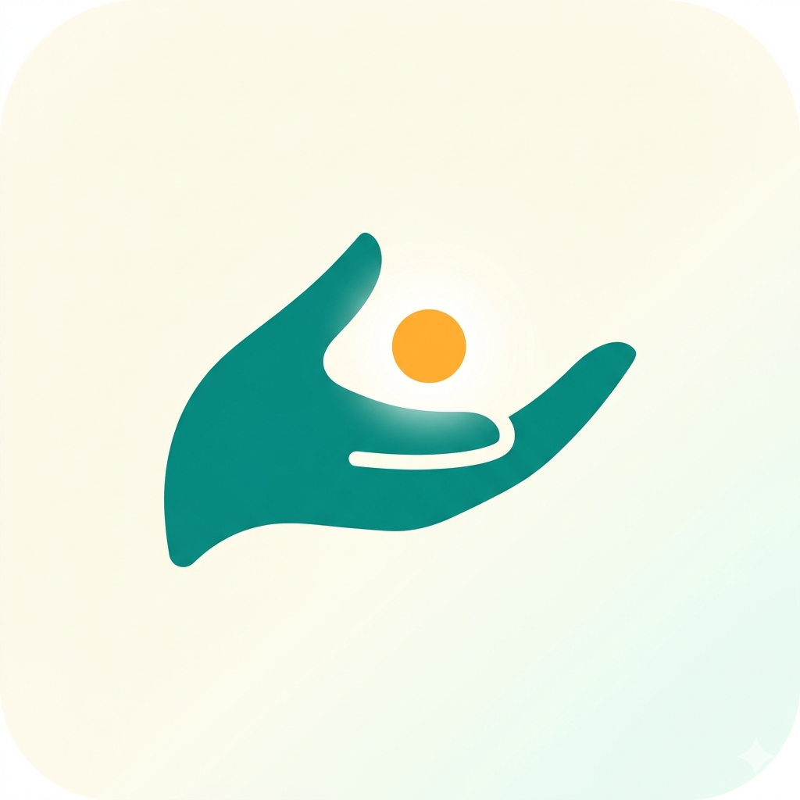
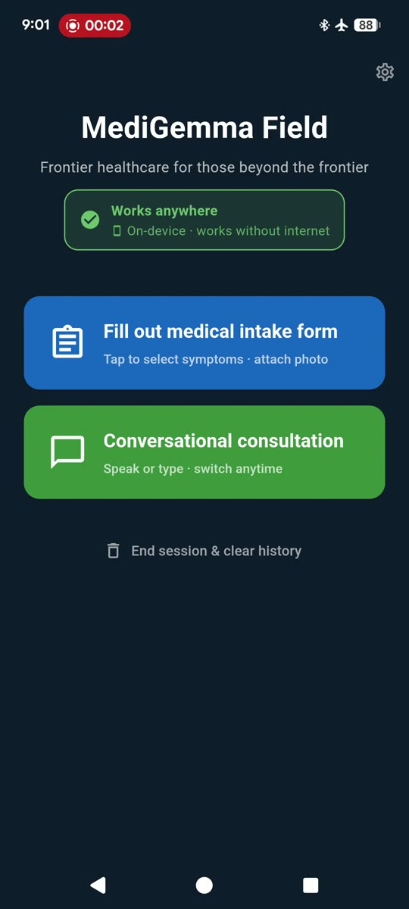
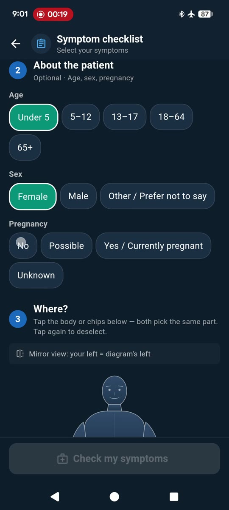
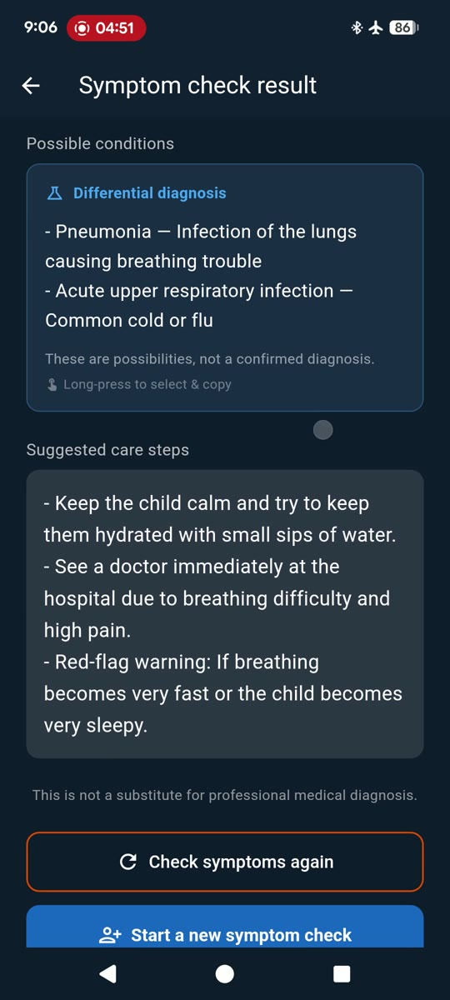
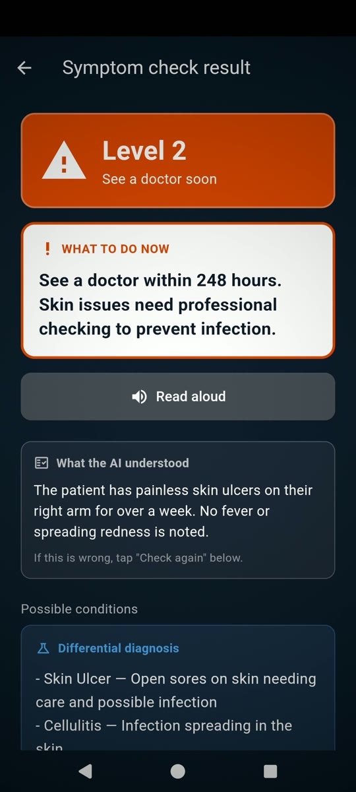

Frontier healthcare for those beyond the frontier.
100 % on-device · 140 languages · works fully offline.
For billions of people, the question "should I take my child to the hospital, or wait at home?" is life-critical — and yet the medical companion apps that could help them all assume a stable internet connection. We built one that doesn't.
Sources: WHO & World Bank Tracking universal health coverage · GSMA State of Mobile Internet Connectivity 2025
Filmed in airplane mode. No internet, no API, no backend — just a phone, a Gemma 4 model, and a clear answer to "what should I do right now?"
Real screens from a real Android device — captured with the phone in airplane mode, while running on Gemma 4 E2B.




Captured on Google Pixel 6a. Airplane-mode icon visible in every status bar.
Built for users that mainstream healthcare apps quietly leave behind.
After a one-time 2.4 GB download, no internet is ever needed. The AI lives on the phone.
The UI itself is translated by Gemma 4 on-device — every region, every dialect target.
No backend, no API, no telemetry. Medical data never leaves the device. Uninstall = full erasure.
Speak in your language, attach a photo of a wound, or tap symptom chips. Switch input any turn.
WHO ETAT triage · OPQRST · WHO IMCI · SBAR · HL7 FHIR · ICD-11 · NRS pain scale.
Color-blind safe (color + icon + number), 48 dp tap targets, voice-first option, WCAG 2.1 AA.
The cheapest layer runs on every turn; the most expensive layer only on confidence-driven escalation. Most user sessions never reach Layer 3 — saving battery, latency, and thermal budget on the entry-level phones that need them most.
WHO official taxonomy. Keyword extraction → injects medical context into both Layer 2 and Layer 3.
ICD-grounded prompt. Returns either a follow-up question, a confident triage (most turns end here), or escalates to Layer 3 when uncertain.
Same ICD context + full Q&A history. Internal step-by-step reasoning for the difficult cases.
Every claim in our writeup and video is grounded in public, citable sources. The list below is the authoritative version.
ICD-11 content used under CC BY-ND 3.0 IGO (codes, titles, and URIs preserved verbatim, no adaptations). WHO is the source of all ICD-11 data. Citation: International Classification of Diseases, Eleventh Revision (ICD-11), World Health Organization (WHO) 2019/2021.